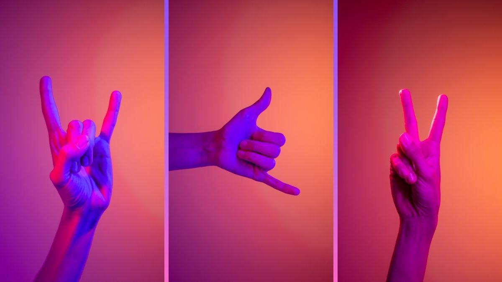
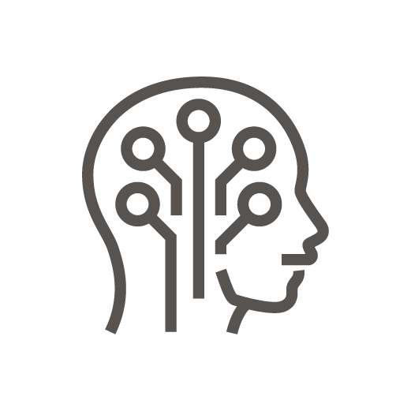
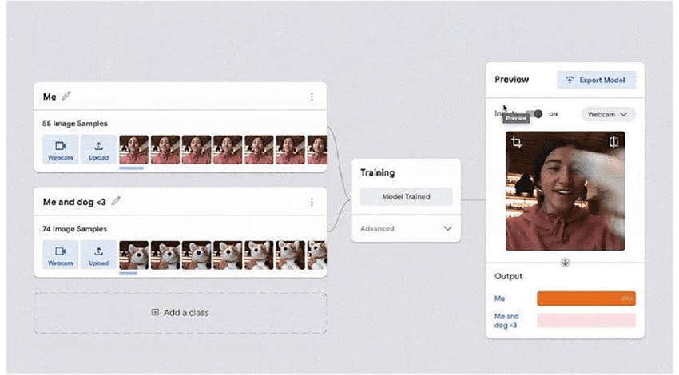
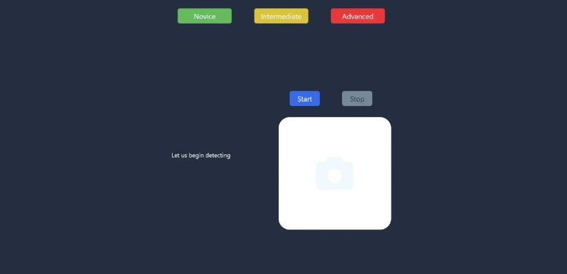
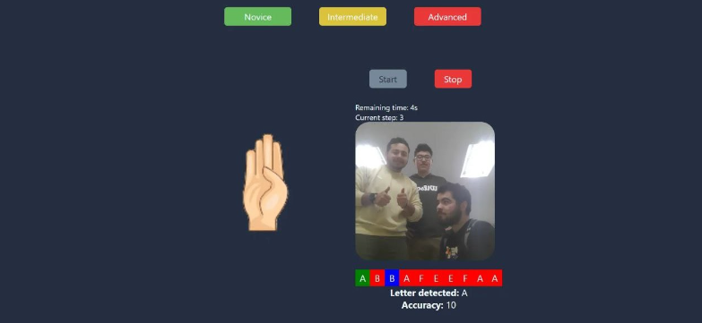
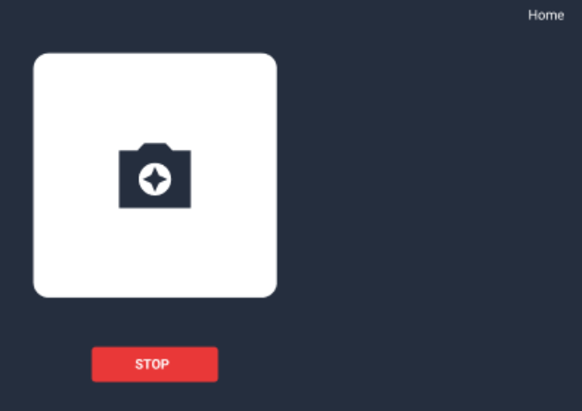
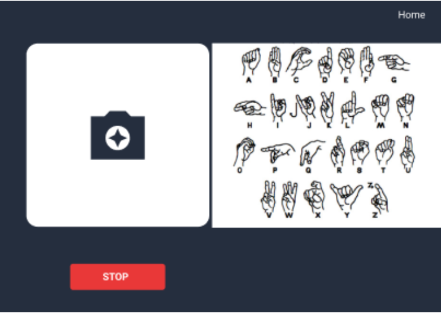

El proyecto consiste en una aplicación web desarrollada en React utilizando Machine Teachable, un motor de
aprendizaje automático en línea que permite a los usuarios imitar un gesto en Lengua de Señas Mexicana (LSM)
y recibir retroalimentación y retroalimentación sobre su desempeño. La aplicación muestra un video de un
gesto que el usuario debe imitar, luego usa la cámara web del usuario para registrar el intento y analizar
el gesto usando Teachable Machine. Finalmente, la aplicación indica qué tan bien el usuario imitó el gesto.
Introducción
El lenguaje de señas es el lenguaje común para las personas que son sordas de nacimiento, quedaron sordas
por algún evento que les ocurrió o cuentan con problemas de vocalización. Este lenguaje está constituido por
un conjunto de señas que representan primordialmente el abecedario, a este conjunto se le suman señas que
representan una palabra en particular, siendo algún nombre, verbo o característica, las señas pueden ser
estáticas, es decir, que no requieren de movimiento para entenderse.

Formulación del problema
Las personas sordas necesitan comunicarse con los demás, al no contar con un medio vocal para conseguir este
objetivo, se desarrolló y formuló un lenguaje de señas que puede variar de pais a pais, por lo que estas personas
deben aprender y practicar el lenguaje de señas universal o local de su país de residencia. En casi la mayoría de
las ocasiones, las personas no sordas no suelen tener conocimiento del lenguaje de señas universal o local, por lo
que les resulta imposible comunicarse con las personas sordas de manera adecuada, limitándose a realizar gestos
básicos para decir que no se entiende lo que se está diciendo, o escribiendo en un celular o papel, resultando en
una barrera en la comunicación y afecta la calidad de vida de las persona que no pueden vocalizar palabras.
Antecedentes
El detector de lenguaje de señas basado en inteligencia artificial utiliza la visión por computadora para
identificar la posición y forma de las manos del usuario frente a la pantalla. El sistema compara la información
obtenida con su base de datos y proporciona al usuario una interpretación del gesto, además de indicar mediante un
porcentaje el grado de correspondencia del gesto detectado con los gestos almacenados en la base de datos. La
historia de la web abarca más de 30 años, durante los cuales se han alternado períodos de intenso crecimiento con
períodos de estancamiento. El propósito de esta lección es discutir los desarrollos más importantes desde 1991,
centrándose en las organizaciones que han impulsado el desarrollo de Internet, los estándares y recomendaciones
publicados y los navegadores más importantes en cada época. El propósito de esta lección es proporcionar una
descripción general. Se pueden encontrar explicaciones más detalladas y completas en otros cursos sobre estándares
y recomendaciones, navegadores, sistemas operativos y pantallas y líneas de tiempo.
HTML 1.0
Los investigadores del CERN de todo el mundo están difundiendo el sistema creado por Berner-Lee en sus
universidades de origen porque es un sistema abierto y gratuito. En ese momento, Internet existía, pero el
acceso estaba limitado principalmente a universidades y centros de investigación. En noviembre de 1993, se
lanzó la versión 1.0 de Mosaic, un navegador creado por Mark Andreessen en la Universidad de Illinois que
superó a todos los demás navegadores en cosas como permitir que las imágenes se incrustaran en páginas web.
1994 da acceso a Internet a particulares y empresas. Internet se convirtió rápidamente en el servicio de
entrega de información más utilizado, desplazando a servicios de la competencia como Gopher o WAIS.
React
REACT.
React (también conocido como React.js o ReactJS) es una biblioteca Javascript de código abierto para crear
interfaces de usuario para facilitar el desarrollo de aplicaciones de una sola página. Es mantenido por
Facebook y la comunidad de software libre. El proyecto cuenta con más de mil desarrolladores libres. React
tiene como objetivo ayudar a los desarrolladores a crear aplicaciones que utilicen datos que cambian
constantemente.
IA
La IA se ha convertido en un término general para las aplicaciones que realizan tareas complejas que antes
requerían intervención humana, como comunicarse con los clientes en línea o jugar al ajedrez. Para darse
cuenta completamente del valor de la inteligencia artificial, muchas empresas están invirtiendo fuertemente
en equipos de ciencia de datos. La ciencia de datos es un campo interdisciplinario que utiliza métodos
científicos y de otro tipo para extraer valor de los datos. Combina habilidades de campos como la
estadística y la informática con conocimientos empresariales para analizar datos recopilados de múltiples
fuentes.

Teachable Machine.
Es una herramienta basada en la web que hace que sea rápido y fácil de usar para cualquier persona. La
primera versión de Teachable Machine permite que cualquier persona enseñe a su computadora a reconocer
imágenes usando una cámara web. Para muchos, esta es su primera experiencia escribiendo su propio modelo de
aprendizaje automático: enseñar a una computadora a reconocer patrones en los datos (en este caso, imágenes)
y asignar nuevos datos a categorías.

Justificación
Actualmente, en Tijuana Baja California, México existen algunos talleres por parte del gobierno del municipio
para aprender el lenguaje de señas mexicano (abreviado a partir de ahora como LSM) de manera presencial, mientras
que existen sitios web tijuanenses que ofrecen clases particulares a individuos o grupos para enseñar este
lenguaje, siendo los maestros personas certificadas en el LSM, por otra parte, en otros estados también existen
taller y cursos, existen aplicaciones como InterSeña o Aprende señas, que da clases de manera interactiva y
divertida para aprender este lenguaje, finalmente, existen videos y cursos en Internet que tienen el mismo fin que
nos trae a este documento, por lo que existen diversas alternativas o medios para poder comunicarse con las
personas sordas. No solo es importante para aquellos con problemas de comunicación oral el lenguaje de señas, sino
también para aquellos que no tienen esta dificultad, ya que esto facilita la interacción entre ambos individuos.
En México, para el año 2021, habían 250 mil personas que sabían y utilizaban el LSM, siendo un porcentaje muy bajo
con respecto al total de la población en el año 2020, la situación empeora en Tijuana donde, para el año 2022, un
artículo del Sol de Tijuana menciona que en este municipio solamente hay 14 intérpretes del LSM, siendo una
cantidad muy baja para la cantidad de personas con problemas auditivos en el municipio, dice el artículo que las
plazas para intérpretes están cubiertas, pero en caso de que surja una nueva plaza, no habría quien para cubrirla,
esto deja a exposición que no hay muchas personas que conozcan el LSM en Tijuana.
Objetivos Generales
Crear un modelo de aprendizaje por medio de inteligencia artificial utilizando Teachable Machine para
crear un sitio web donde el usuario aprenda a imitar las señas del LSM moderno.
Objetivos Específicos
Indicar el porcentaje de acierto de imitación de un gesto del lenguaje de señas para que el usuario
conozca qué tan bien imitó el gesto.
Mostrar una cadena de señas a imitar para que el usuario las vaya haciendo, en conjunto con la imagen de
la seña y un recuadro con la cámara del usuario para ver su progreso en el momento.
Desplegar las señas más típicas del LSM para que el usuario tenga conocimiento de ellas y pueda reducir la
barrera de comunicación entre él y una persona sorda.
Metas
Buscamos que el proyecto sea una página donde se muestre un recuadro con lo que esté capturando la cámara del
dispositivo que el usuario esté utilizando (laptop o computadora de escritorio con cámara móvil instalada), otro
recuadro con la imagen del gesto a imitar y que se muestre el grado de acierto del gesto imitado, todo esto
mediante una interfaz simple y amigable para el usuario. Se pretende que el proyecto se limite a simplemente
mostrar las señas básicas del LSM, muestre el grado de acierto después de la imitación de la seña y alguna
información adicional, no incluirá el uso de contenido multimedia como música ni niveles de dificultad, previo a
esta pantalla deseada, se podrá seleccionar un nivel de dificultad para la imitación de los gestos, y estos serán
generados aleatoriamente, la diferencia entre cada nivel será el tiempo de espera que tendrá el usuario para
imitar el gesto.
Impacto a la Solución
El desarrollo de este proyecto tendrá un impacto muy positivo en la comunidad de las personas que desconocen el
lenguaje de señas, esto debido a que podrán conocer el lenguaje de señas de una manera más interactiva: podrán
practicar desde las señas más simples, las cuales son el abecedario mexicano moderno y algunas palabras básicas
completas sencillas de un solo gesto.
Desarollo
Se determinó que el proyecto va a contener tres pantallas, una donde se de una información inicial sobre qué
fue lo que se desarrolló, junto con un botón para avanzar a la siguiente pantalla; una segunda pantalla de
selección de nivel de dificultad para los usuarios con distinto tiempo de experiencia utilizando el LSM; y una
tercer pantalla donde se aparecerá esencialmente el juego o interacción con la imitación de las señas del LSM,
al final de esta interacción, en la misma pantalla, aparecerán los resultados finales que tuvo el usuario en
cuanto al grado o porcentaje de acierto imitando señas, por lo que este sería el ciclo de vida general del
sistema.
La pantalla que tendrá más tiempo de vida sería la última: la pantalla de interacción. Esta pantalla tomará
como referencia el nivel de dificultad seleccionado, esto afectará a cuánto tiempo tiene el usuario para
lograr imitar de manera correcta el gesto mostrado en pantalla; los gestos mostrados serán tomados de un
arreglo con todos los gestos que soporta el sistema, seleccionando solamente 10 de estos gestos de manera
aleatoria, es entonces que se toman estos gestos, el usuario tiene un tiempo limitado para lograr imitarlo
exitosamente, si no lo consigue, pasa al siguiente gesto, asì hasta que se termine la cadena de gestos a
imitar, es aquí cuando se muestra en pantalla los resultados finales. Este sería el ciclo de vida de la
tercera pantalla.
Desarollo de la metodología
El proyecto comenzó con la identificación del problema donde nos queríamos enfocar e iniciar a delimitar la
población al que va dirigido el proyecto, nos enfocamos en la comunidad sorda para aportar de alguna manera un
aspecto de inclusión, el objetivo es crear un programa que de manera divertida te enseñe las letras y gestos
básicos del lenguaje de señas, ya que es bastante raro o difícil para que personas que no conozcan a una
persona cercas de ellos sorda , aprender el lenguaje de señas. Para el desarrollo de este proyecto era
necesario la investigación detallada del lenguaje de señas moderno mexicano, gestos básicos y sus letras,
aparte era necesario investigar la información teórica previa sobre el tema, para poder justificar la
necesidad de elaboración del proyecto, finalmente se plantearon las herramientas informáticas que iban a ser
necesarias, como react, teachable machine y javascript.
Los siguientes pasos fueron bastante simples de dar seguimiento ya que presentamos con las bases, el siguiente
paso fue la elaboración del diseño básico del programa que fue elaborado en Figma, después comenzó la
codificación. En general el proyecto tomó una metodología de cascada ya que todos, aunque asignados a
distintos roles, nos enfocamos a resolver problema por problema mientras ocurrían en el desarrollo.
Rutina
Dentro del desarrollo de la metodología existen patrones que se realizaron para mantener una constante
evaluación del proyecto, entre ellas fueron las entregas de los avances , ya que antes de cada uno de esas
entregas se realizó una revisión completa de la documentación y para la documentación se necesitaba conocer el
status actual del programa en ese momento. En cuanto a la rutina constante del proyecto que se tomó en cuenta
fue la siguiente, cabe recalcar que esto aplica para cada avance o proceso nuevo dentro del documento y
programa:
Análisis de requerimientos.
Diseño de la solución.
Implementación.
Integración y pruebas de sistema.
Documentación.
Aprobación final.
Uso y Mantenimiento
Para el correcto uso de nuestro Proyecto de Detector de Lenguaje de Señas titulado cómo: Hand Sign Hero, se tiene
que seguir una guía introductoria breve, por lo cual se tiene que hacer click en el siguiente enlace de GitHub
Pages: “aqui va el link de Github Pages” para empezar a usar este Proyecto.

Una vez que se hace click en el enlace de GitHub Pages, ahora en esta captura de pantalla
se puede apreciar que tenemos 5 botones, los cuales son: “Novice”, “Intermediate”, “Advanced” que son los botones
con el cual podemos escoger el nivel de dificultad de nuestro proyecto de Detector de Lenguaje de Señas: Hand Sign
Hero, y los otros 2 botones restantes son los botones de “Start” con lo cual sirve para iniciar y utilizar nuestro
proyecto y empezar a hacer señas con nuestras manos para que las detecte nuestro proyecto y también tenemos el
botón de “Stop” que por lo pronto está deshabilitado porque no se ha iniciado el programa y este sirve para poder
detener la ejecución de detección de lenguaje de señas.

En esta otra captura de pantalla podemos apreciar que ahora se deshabilita el botón de
“Start” ya que se está ejecutando nuestro proyecto de Detector de Lenguaje de Señas: Hand Sign Hero, y se habilita
el botón de “Stop” para detener la ejecución, pero en este caso podemos observar que ya se inició la ejecución de
nuestro proyecto, y en la parte izquierda se muestran imágenes de señas, con el cual tenemos un tiempo máximo de 5
segundos para poder hacer la misma seña con nuestra mano frente a la cámara web y en la parte de abajo donde se
muestra la seña que estamos haciendo frente a la cámara, podemos observar que aparece unas letras que indican qué
tipo de letra o palabra está detectando la cámara conforme a la seña que estamos haciendo y también el porcentaje
de exactitud o precisión de cómo hacemos la seña finalmente con nuestra mano.

Esta es una captura de un prototipo con el cual al presionar el botón disponible se cambia de “Start” a “Stop” y
viceversa con el cual se inicia el servicio de cámara y podemos empezar a hacer las señas que van apareciendo en
la parte izquierda.

En esta última captura de pantalla se puede observar que en la parte derecha podemos ver que se activa la cámara
y podemos hacer cualquiera de las señas mostradas en esa imagen de prueba que simula las señas que podemos hacer
con nuestra mano para que la detecte nuestro proyecto de Detector de Lenguaje de Señas: Hand Sign Hero y nos diga
que tan precisa fue nuestra seña conforme a la imagen a imitar del lado izquierdo.